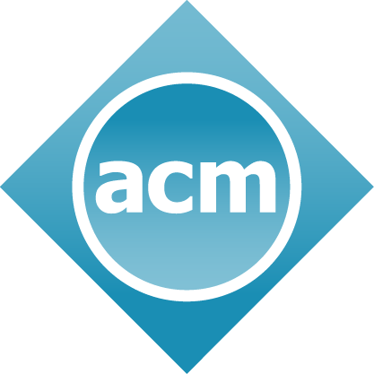
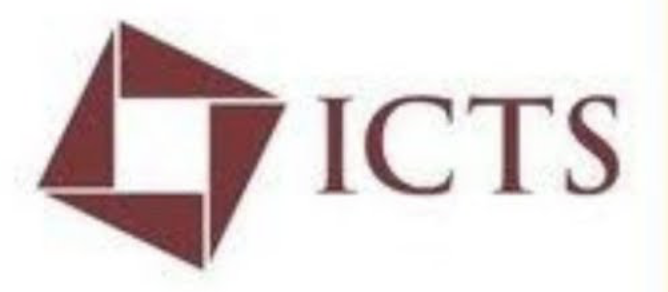
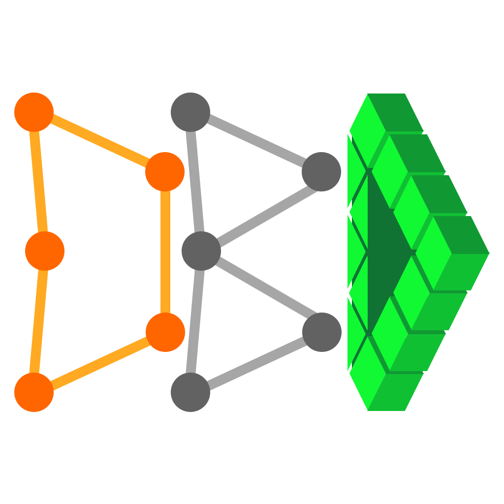

Experience
My Professional trail - Industry, Research and Academia
ACM Summer School on Foundations of Hardware Security

Attendee
The school covered a variety of topics like post quantumn Lattice based cryptography, microarchitectural security and sidechannel attacks to leak cryptographic keys.
IIT Bombay Trust Lab
Summer Research Intern
Under the guidance of Prof. Biswabandan Panda, I am engaged in research activities related to hardware security vulnerabilities in heterogeneous systems.
Computer Systems Security Laboratory, IISc
Research Student
Under the guidance of Prof. Vinod Ganapathy, I am engaged in research activities related to distributed systems security.
Summer School in Mathematics and Statistics, ICTS Bangalore

Attendee
It was a wholesome and allrounding experience at the cross section of many fields of mathematics- Linear Algebra, Probability, Statistics. There were several talks by scientists from diverse fields ranging from evolution to game theory. I was overwhelmed by the beauty and simplicity behind the construction of fractals.
Databased-IISc Computer Science Crew

Core Member
- Spring 2026 - Convener and Co-speaker of Computer Systems lecture series named - The Nearly Whole Truth
- Spring 2026 - Co-speaker for a talk on probability theory
- Fall 2025 - Spring 2026 - Managed the organization of GPU Talk series. Talks were delivered by Ullas, a PhD student at IISc.
- Fall 2025 - Co-speaker with PhD Ullas - Talk as a part of Hack-n-Seek event
- Fall 2025 - Led the organization of the Databased Annual Festival 2025, Talk on MPC in Byzantine settings